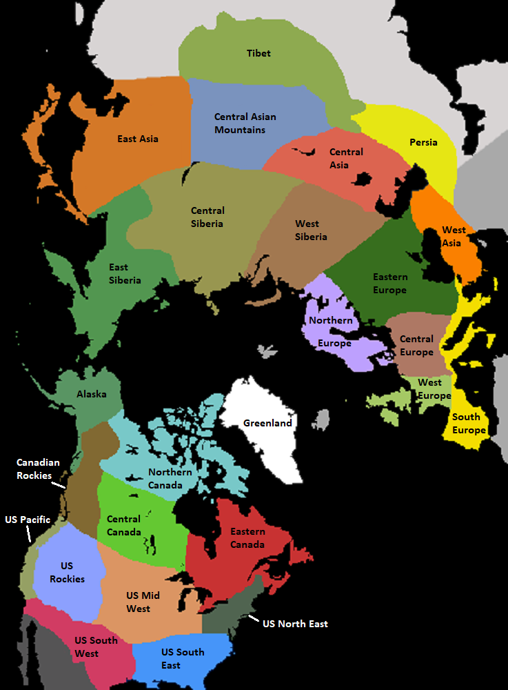
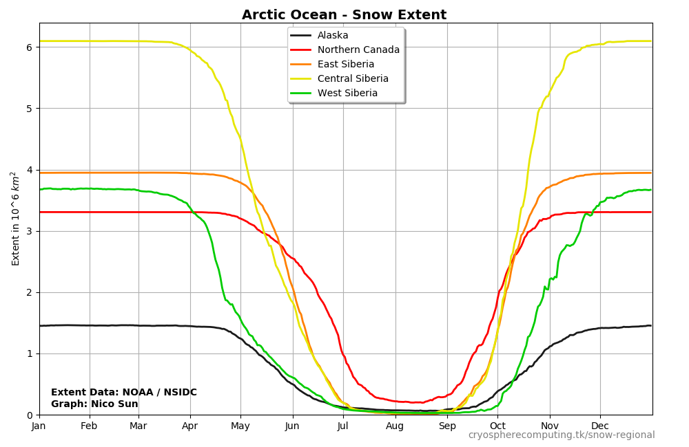
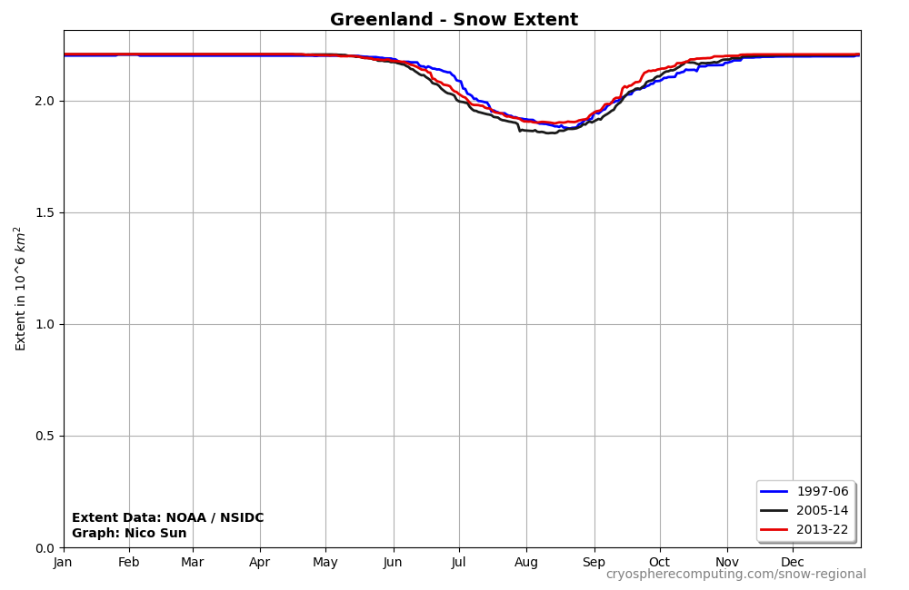
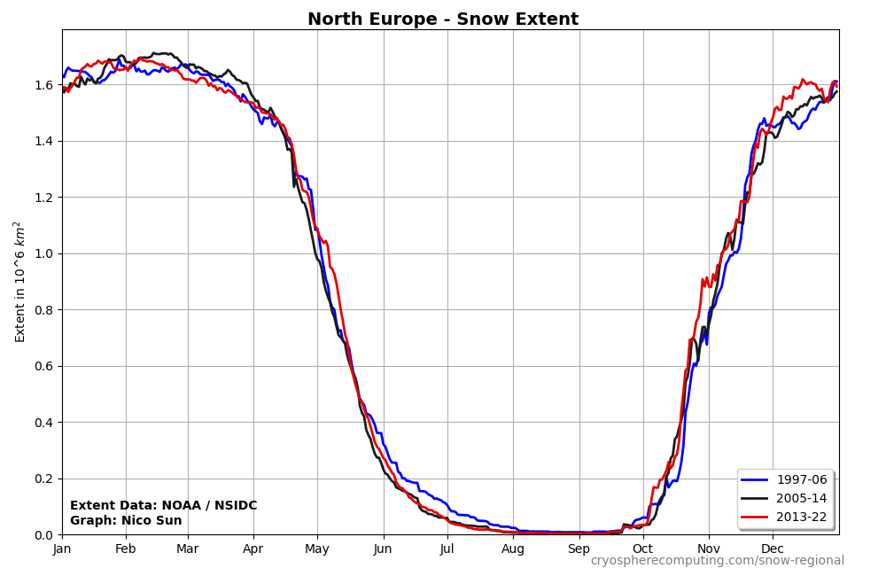
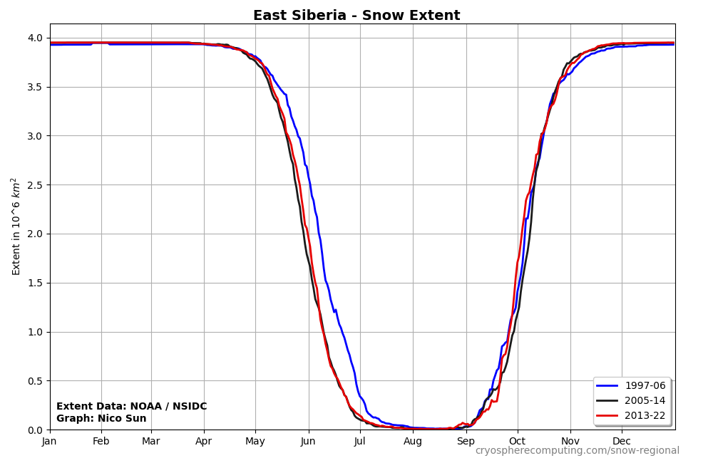

Regional Snow Extent
The exact region extents can seens on the map.

Only the high resolution data since 1997 is good enough for a detailed regional analysis.
The first chart shows the changes of average snow extent over the year for the Regions of Arctic Ocean, USA, Canada, Europe and Asia.

Snow Extent change over time
The limited timespan of 23 years would only allow two true decadal means. Instead we created
three 10 year means with a slight overlap. Over time they will drift apart until we get three true decades.
North America
Regions: Greenland, Eastern Canada, Central Canada, Canadian Rockies, Northern Canada, Alaska, US NE, US SE,
US MidWest, US SW, US Pacific, US Rockies

Europe
Regions: North Europe, West Europe, Central Europe, Southern Europe, Eastern Europe

Asia
Regions: East Siberia, Central Siberia, West Siberia, Central Asia, Central Mountain Asia, Eastern Asia, Tibet, Western Asia, Persia

Data used
National Ice Center. 2008, updated daily. IMS Daily Northern Hemisphere Snow and Ice Analysis at 1 km, 4 km, and 24 km Resolutions, Version 1.1-1.3. Boulder, Colorado USA. NSIDC: National Snow and Ice Data Center. doi: https://doi.org/10.7265/N52R3PMC.